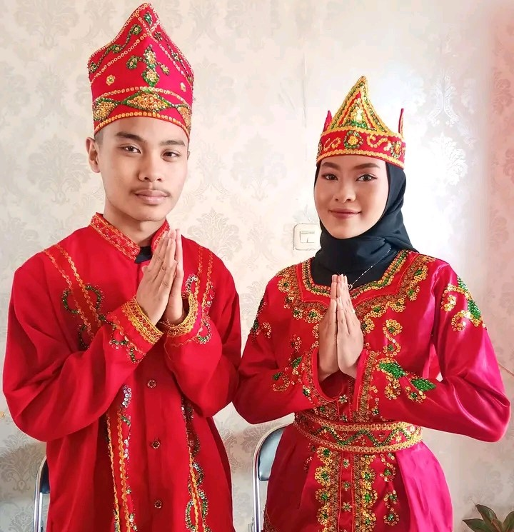
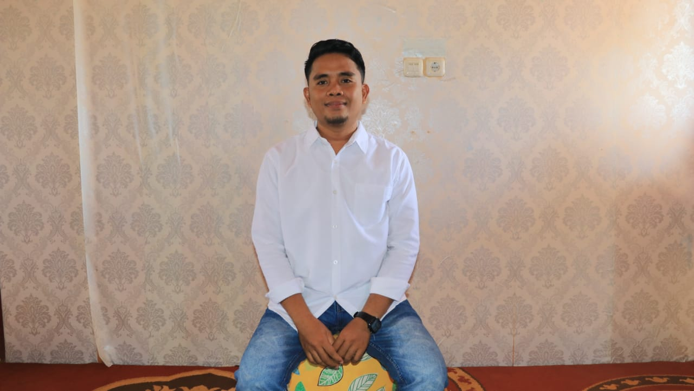
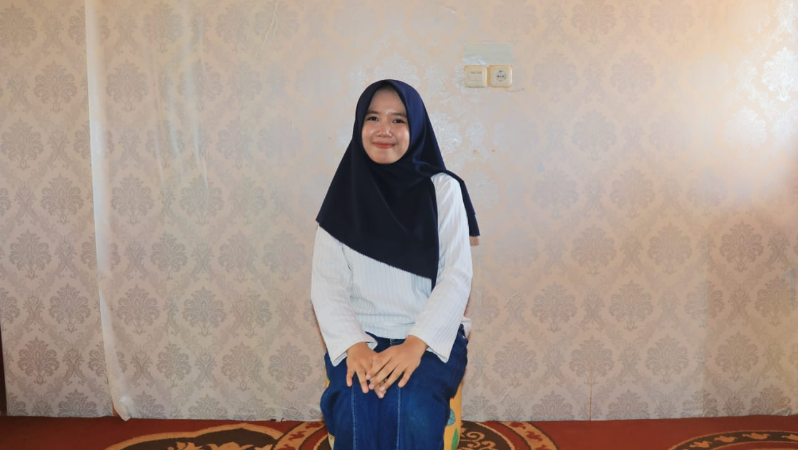
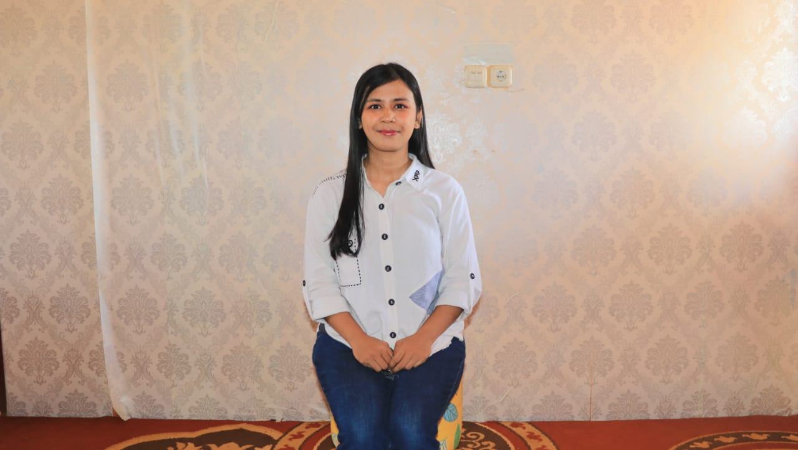
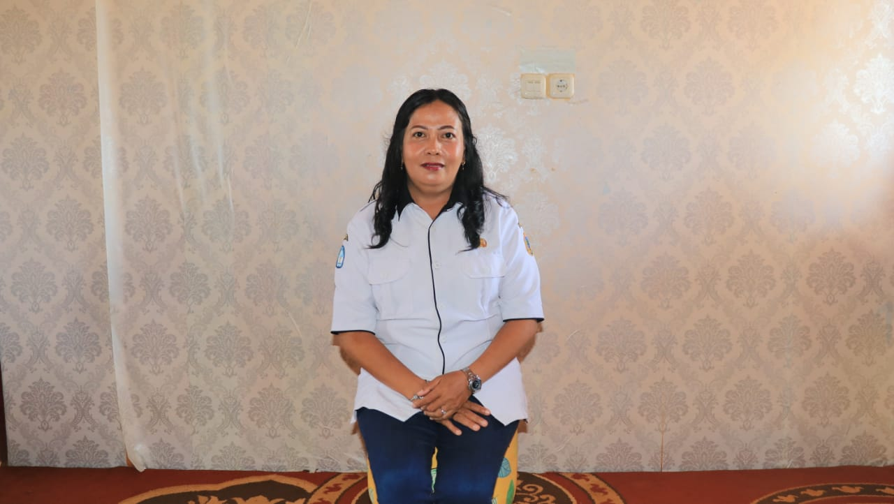

SMK NEGERI 1 PETASIA TIMUR

SMK negeri ini didirikan pertama kali pada tahun 2016. Sekarang SMK Negeri 1 Petasia Timur memakai panduan kurikulum belajar SMK 2013 REV.Desain Pemodelan dan Informasi Bangunan.SMK Negeri 1 Petasia Timur memiliki sosok kepala sekolah yang bernama Alpin Lainua dan operator sekolah Murniyati.
VISI & MISI
VISI
"Menjadikan SMK NEGERI 1 PETASIA TIMUR sebagai sekolah yang menyiapkan peserta didik untuk siap bekerja,santun,mandiri,dan kreatif serta memiliki iman dan taqwa kepada Tuhan Yang Maha Esa sehingga mampu bersaing di era industri 4.0"
MISI
1.MENANAMKAN KEIMANAN DAN KETAQWAAN KEPADA TUHAN YANG MAHA ESA
2.MENANAMKAN PRILAKU DISIPLIN DAN BERBUDAYA SEHINGGA MENJADI LULUSAN YANG MEMILIKI KECERDASAN SPIRITUAL DAN EMOSIONAL
3.MELATIH DAN MENGEMBANGKAN SISWA UNTUK MEMPEROLEH KOMPETENSI DALAM BIDANGNYA SECARA PROFESIONAL SESUAI KEBUTUHAN DU/DI YANG MAMPU BERSAING SECARA KOMPETITIF
4.MENUMBUHKAN SIKAP KERJASAMA,MANDIRI,KEPEKAAN SOSIAL ATAS DASAR RASA CINTA TANAH AIR DAN BANGSA
TENTANG GURU
MIRWANSYAH,S.Pd
Wakasek Kurikulum bertanggung jawab dalam menyusun dan menjabarkan kalender pendidikan.
NINING RIANTI,S.Pd
Guru Bidang Humas membina hubungan antara sekolah dengan wali murid.
RIZA FENNISYA,S.Pd
Ibu Riza Fennisya sebagai bendahara sekolah.
MARLINA LAU LAU,S.Pd
Guru Bidang Sarana dan Prasarana bertugas untuk menyusun rencana kebutuhan sarana dan prasarana sekolah.